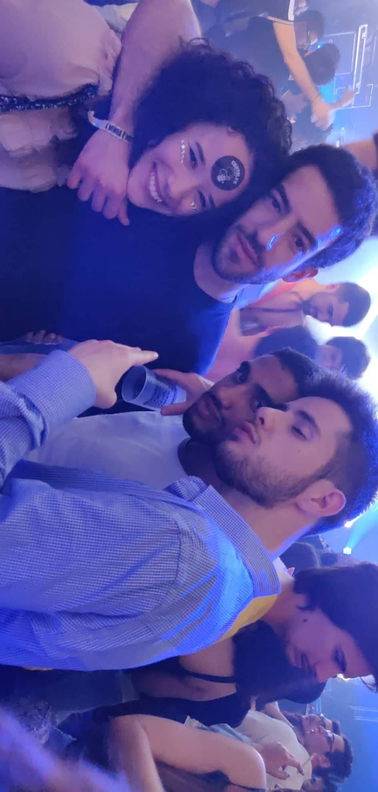

Back
This game was created under the subject of Laboratorio de Multimedia 3 in association with the organization GAMERS4NATURE. It belongs to the final project of our group consisting of Sara Ferreira, Afonso Lopes, Miguel Coutinho and Carlos Correia. We have been challenged to design and develop a game that simultaneously tests our knowledge of the subjects taught in the discipline and promotes a broader and more solid awareness of the impact of ocean pollution on microplastics. So we developed this game that carries a narrative component designed to have an immersive and complete gaming experience, using the story developed as a vehicle for information relevant to the environmental theme at hand. Using metaphors and analogies in narrative mystique to convey the idea that change is necessary.
